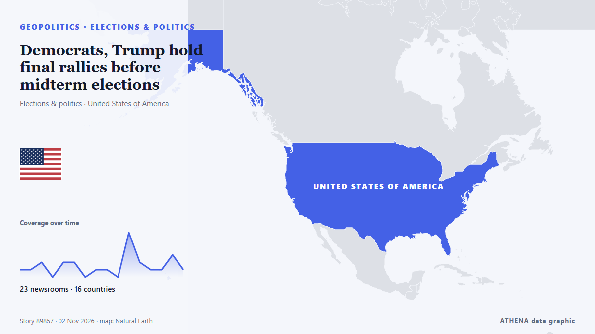

Democrats, Trump hold final rallies before midterm elections

Polls show Democrats are near certain to take the majority in the House of Representatives and have a real shot at winning the Republican-held Senate. из Free Malaysia Today
Независимые источники: 31 издание в 23 странах, с 1 нояб.; первым сообщил Al Jazeera English; освещение продолжает расти. ATHENA оценивает риск как низкий (1.2/10), прежде всего из-за географического и отраслевого охвата и темпа освещения. Уверенность — 90 % (высокая); подтверждают независимые источники: 31 издание, средняя надёжность источников — 75 %. СМИ по странам: Катар (3), Сингапур (3), Соединенные Штаты (3). Освещение: с 1 нояб. по 2 нояб., 33 ч.
Почему это важно: События в сфере безопасности и дипломатии могут менять союзы, торговлю и рынки далеко за пределами непосредственно затронутых стран.
Что изменилось: 25 новых сообщений от 23 редакций за 24 часа до 2 нояб..
Первый заголовок: US midterms: 2 days to go – what polls say as Trump, El-Sayed hit the trail
Заголовки приводятся на английском языке, как они были опубликованы.
Коротко в цифрах
Отобрано, оценено и написано по опубликованной методологии ATHENA. Ни один редактор не вмешивается в отдельные события. Как это создаётся ›
| 01 Nov 08:47 UTC | 1 |
|---|---|
| 01 Nov 10:47 UTC | 1 |
| 01 Nov 12:47 UTC | 2 |
| 01 Nov 14:47 UTC | 0 |
| 01 Nov 16:47 UTC | 2 |
| 01 Nov 18:47 UTC | 2 |
| 01 Nov 20:47 UTC | 0 |
| 01 Nov 22:47 UTC | 1 |
| 02 Nov 00:47 UTC | 1 |
| 02 Nov 02:47 UTC | 0 |
| 02 Nov 04:47 UTC | 6 |
| 02 Nov 06:47 UTC | 2 |
| 02 Nov 08:47 UTC | 1 |
| 02 Nov 10:47 UTC | 1 |
| 02 Nov 12:47 UTC | 3 |
| 02 Nov 14:47 UTC | 5 |
| 02 Nov 16:47 UTC | 4 |
| 01 Nov 09:29 UTC | 0.0 |
|---|---|
| 02 Nov 08:26 UTC | 0.8 |
| 02 Nov 19:11 UTC | 1.2 |
Откуда эти цифры
Значимость
Риск
Уверенность
Освещение — кто сообщил и когда
заголовок в оригинале · открывает источник- Al Jazeera English · КатарUS midterms: 2 days to go – Who leads in the polls as Trump rallies
- The Straits Times · СингапурTrump White House maps path to govern without Congress if Democrats win
- The Rio Times · БразилияDemocrats Lead US Midterm Polls and Odds
- Rappler · ФилиппиныTrump White House maps path to govern without Congress if Democrats win
- Forbes Business · Соединенные ШтатыTrump Says He May Become ‘Mr. Veto’ If Democrats Win Control Of Congress
- NPR · Соединенные ШтатыHow to think about the midterms — and the political moment the country is in
- The Hill · Соединенные ШтатыTrump says he'll become 'Mr. Veto' if Democrats take Congress
- The Independent · Великобритания'Mr. Veto:' Trump maps a path to govern without Congress if Republicans lose control
- BBC News · ВеликобританияDemocrats have high hopes for midterms - but are the polls right?
- The Straits Times · СингапурTrump says he may be ‘Mr Veto’ if Democrats win midterms
- Free Malaysia Today · МалайзияDemocrats, Trump hold final rallies before midterm elections
- Express Tribune · ПакистанUS midterms: Polls show Democrats ahead in battle for Congress
- Cyprus Mail · КипрTrump prepares to govern without Congress if Democrats win midterms
- IOL · Южно-Африканская РеспубликаDemocrats, Trump hold final rallies before midterm elections
- The Independent · Великобритания‘Mr. Veto’: Trump maps a path to govern without Congress if Republicans lose control
- CNA (Channel NewsAsia) · СингапурDemocrats, Trump hold final rallies before midterm elections
- TASS (English) · РоссияWhite House prepares to bypass Congress if Democrats win midterms — media
- The Korea Times · Республика КореяDemocrats, Trump hold final rallies before midterm elections
- The New Arab · INTDemocrats, Trump hold final rallies before US midterm elections
- NDTV · ИндияTrump Reveals What He Will Do If Democrats Win US Midterm Elections
- ProtoThema English ·Trump claims midterm polls are ‘rigged’ and warns America is ‘finished’ if Democrats win
- AzerNews · АзербайджанTrump: I will veto everything if Democrats win
- Al Jazeera English · КатарUS midterms 2026 live: Trump, Democrats make final push amid Michigan rift
- FXStreet · ИспанияThe Midterms: How will stock markets react?
- Vanguard · НигерияDemocrats, Trump hold final rallies before midterm elections
- Daily Tribune · ФилиппиныDemocrats, Trump hold final rallies before midterm elections
- France 24 English · ФранцияWhat changes if Democrats win a majority in Congress?
- Taipei Times · ТайваньDemocrats, Trump hold final rallies
- Ada Derana · Шри-ЛанкаTrump says he'll become 'Mr Veto' if Democrats win US midterm elections
- Al Jazeera English · КатарTrump, Vance campaign with candidates on last day before US midterms
- Kyiv Post · УкраинаDemocrats, Trump Hold Final Rallies Before Midterm Elections
- Buenos Aires Times · АргентинаDemocrats, Trump hold final rallies before midterm elections